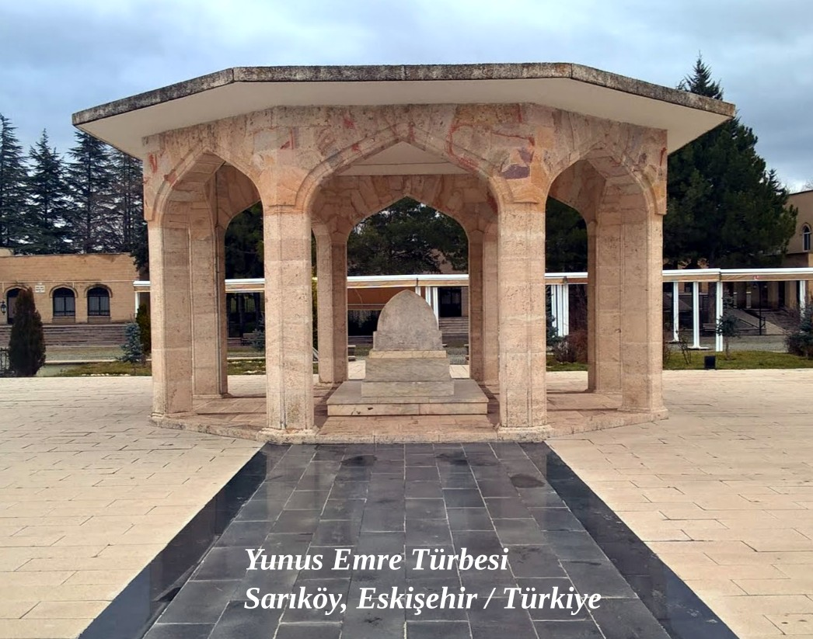

Yunus Emre
Yunus Emre, Türk şiirinin en önemli temsilcisidir.
Hayatı hakkında pek az bilinen Yunus Emre'nin, on üçüncü yüzyılın ikinci çeyreği ile on dördüncü yüzyılın ilk çeyreğinde yaşadığı düşünülmektedir. Bazı araştırmacılar Eskişehir'in Mihalıççık ilçesine bağlı Sarıköy'de yaşadığını, bazılarıysa Karamanlı olduğunu düşünür. Hacı Bektaş Veli'nin bir eserine dayanarak Sarıköy'de yaşadığı ihtimali daha güçlü görünmektedir.
Yunus Emre, Risâletü'n-Nushiyye isimli eserinde şöyle der;
Söze târîh yidi yüz yidi-y-idi, Yûnus cânı bu yolda fidî-y-idi
Bu beytinde geçen Hicri 707 yılı, bugün kullandığımız miladi takvime göre 1308 yılına denk gelmektedir. 1308 yılı bu eserin yazılış tarihi olup, Yunus Emre'nin bu yılda hayatta olduğunu göstermektedir.
Ölümü 1320 olarak kabul edilen Yunus Emre'nin 82 yaşında öldüğü söylenir. Buna göre doğum tarihi de 1238 yılına denk gelmektedir.
Yunus Emre'nin eserleri de onun yaşamı hakkında bazı bilgiler içermektedir. Tüm Anadolu'yu dolaştığı ve Mevlana'yı gördüğü de eserlerinde geçen cümlelerden anlaşılmaktadır.

Fikrî ve edebî kişiliği
Yunus Emre sanat yaşamında halka, halkın dili ile hitap etmiştir. Yani Türkçe'yi çok güzel kullanmıştır. Öz Türkçe ile eserler vermiştir. Bu da Yunus'un her zaman okunup anlaşılmasında önemli bir rol oynamıştır.
Yunus'un şiirleri tasavvuf ağırlıklıdır. Tasavvuf; ruhunu temiz tutmak, Allah sevgisini kalbinde yaşamak, Allah'ı öylesine sevmektir ki cennet için değil, onun sevgisine erişebilmek için uğraş vermek, ömrünü bu yola adamak demektir. İşte Yunus şiirlerinde genellikle bu konuları işlemiştir.
Onun hoşgörüsü de çok önemlidir. "Yaratılmışı hoş gördük, yaratandan ötürü" diyebilecek olgunluktadır. Yunus Emre bir halk şairi değil halkın şairidir. Öylesine çok sevilmiştir ki Anadolu'nun çeşitli yerlerinde adına anıt mezarlar yaptırılmıştır.
Aruz ölçüsü ile de şiirler yazmıştır ama onun en güzel şiirleri hece ölçüsü ile yazdıklarıdır. Yunus Emre'nin "Risalettün- Nushiyye" ve "Divan" olmak üzere iki eseri vardır. Eserlerine başka âşıkların eserleri karıştıysa da sonradan bunlar ayıklanmıştır.
- Klavyede ◀ | ▶ tuşlarını kullan.